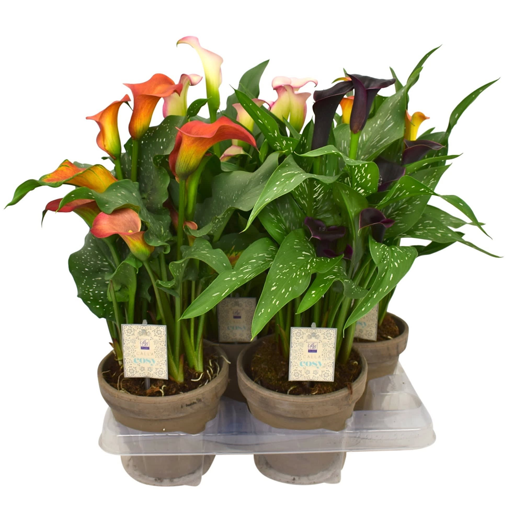

Zantedeschia
Familie: Araceae
Descriere: Zantedeschia, cunoscută și sub numele de "Crinul Calla", este o plantă cu flori elegante și frunze verzi lucioase. Florile sale sunt de obicei albe, dar pot varia în culori.
Îngrijire: Preferă sol bine drenat și lumină indirectă. Necesită udare regulată, dar fără a lăsa solul să se usuce complet.
Nota: Ideală pentru decorarea interioarelor datorită aspectului său sofisticat și întreținerii ușoare.
